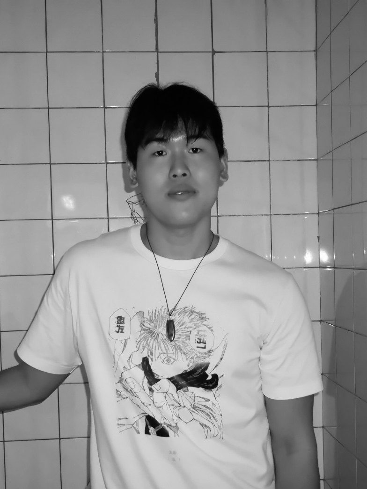

소개
안원빈
기록자 · 콘텐츠 에디터 · 필명 우당로(遇當路)

기획부터 집필, 촬영, 발행까지 혼자 완주해 본 사람입니다.
5성급 호텔 주방에서 접시 위 소스 한 방울의 위치를 따지던 요리사였고, 어도비 고객지원센터에서 크리에이티브 툴을 쓰는 사람들의 언어를 들으며 만드는 방법에 대해 고민해왔습니다. 그 사이에 시켜서 만든 것이 아니라 만들고 싶어서 만든 것들이 쌓였습니다. 지금은 책을 출간한 한 사람의 문학가로서 활동 중입니다.
감성 콘텐츠 채널 ‘우당로’ 연재, 팟캐스트 2개 기획·진행, 협업 영상 프로젝트 ‘해방일기’, 글 전시 참여, 그리고 1,000여 편의 기록과 80여 편의 완성 산문. 브랜드의 온도를 문장으로 옮기는 일이 제 직무라고 생각합니다.
2026년 11월, 첫 소설 『주먹 쥔 손으로 쓰다듬지 못해서』를 독립출판으로 펴냈습니다. 글과 표지, 내지를 모두 직접 만들었습니다.
[ 할 수 있는 일 ]
- 콘텐츠 기획
- 카피라이팅
- 에세이 · 스토리텔링
- 인스타그램 연재 포맷 설계
- 릴스 · 카드뉴스 제작
- 팟캐스트 기획 · 진행 · 편집
- 인터뷰 · 촬영
- 촬영 대본 작성
- 책 표지 · 내지 디자인 (인디자인)
[ 지나온 길 ]
- 주방요리학교 졸업, 5성급 호텔 주방 요리사
- 카페카페에서 2년
- 글인스타그램 ‘우당로’ 연재, 글 전시 참여
- 소리팟캐스트 ‘우당로의 기록’, 인터뷰 프로젝트 ‘해방일기’
- 현장금천 청년 아트크루 팝업작업실 기획 · 운영
- 책2026. 11 첫 소설 『주먹 쥔 손으로 쓰다듬지 못해서』 (인디펍)